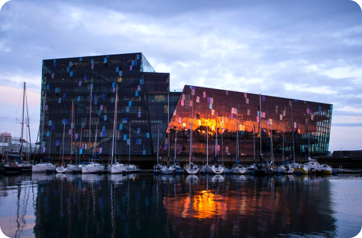

-
Tours & Excursions
Find Unique Tours and Activities in Reykjavik, covering everything from whale watching excursions, bicycle tours around the city, sightseeing trips around Reykjavík and a lot more.
-

Restaurants
Reykjavík has seen it dining options increase dramatically in the past few years. From fine dining to hot dogs and sushi to hamburgers with plenty of vegan dishes - travelers are guaranteed not to be dissapointed!
-

Arts & Culture
Despite the capital area's relatively petite size, Reykjavík is a city that is recognized for its devotion to the arts and culture. Plethora of choices, including more than 60 museums, exhibition spaces, and galleries on almost every corner.
-

Bars & Nightlife
With a growing variety of great bars and restaurants, Reykjavik's nightlife scene has managed to maintain its unique character, charm, and appeal. An extensive list of dance bars, cocktail bars, hipster bars, 40+ bars, beer bars etc